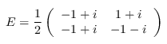
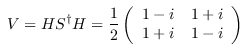
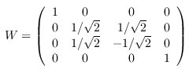
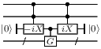

| Safe Haskell | None |
|---|
Quipper.Internal.Monad
Contents
Description
This module provides a high-level circuit building interface
intended to look "functional". At a given time, there is a
circuit being assembled. This circuit has free endpoints (on the
left and right) that can be bound to variables. A qubit or bit is
simply an endpoint in such a circuit. "Applying" an operation to
a qubit or bit simply appends the operation to the current
circuit. We use the Circ monad to capture the side effect of
assembling a circuit.
Synopsis
- data ReadWrite a
- data Circ a
- data Qubit
- data Bit
- type Endpoint = B_Endpoint Qubit Bit
- data Signed a = Signed a Bool
- type Ctrl = Signed Endpoint
- type Qulist = [Qubit]
- type Bitlist = [Bit]
- type Timestep = Double
- type InverseFlag = Bool
- wire_of_qubit :: Qubit -> Wire
- wire_of_bit :: Bit -> Wire
- wire_of_endpoint :: Endpoint -> Wire
- wires_with_arity_of_endpoints :: [Endpoint] -> ([Wire], Arity)
- qubit_of_wire :: Wire -> Qubit
- bit_of_wire :: Wire -> Bit
- endpoint_of_wire :: Wire -> Wiretype -> Endpoint
- endpoints_of_wires_in_arity :: Arity -> [Wire] -> [Endpoint]
- bind_qubit :: Qubit -> a -> Bindings a b -> Bindings a b
- bind_bit :: Bit -> b -> Bindings a b -> Bindings a b
- unbind_qubit :: Bindings a b -> Qubit -> a
- unbind_bit :: Bindings a b -> Bit -> b
- clist_add_qubit :: Qubit -> Bool -> ControlList -> ControlList
- clist_add_bit :: Bit -> Bool -> ControlList -> ControlList
- provide_simple_subroutine :: (Typeable a, Typeable b) => BoxId -> OCircuit -> CircuitTypeStructure a -> CircuitTypeStructure b -> Bool -> Circ ()
- provide_subroutine :: (Typeable a, Typeable b) => BoxId -> OBCircuit -> CircuitTypeStructure a -> CircuitTypeStructure b -> Bool -> Circ ()
- provide_subroutines :: Namespace -> Circ ()
- call_subroutine :: (Typeable a, Typeable b) => BoxId -> RepeatFlag -> a -> Circ b
- get_namespace :: Circ Namespace
- set_namespace :: Namespace -> Circ ()
- put_subroutine_definition :: BoxId -> TypedSubroutine -> Circ ()
- qnot :: Qubit -> Circ Qubit
- hadamard :: Qubit -> Circ Qubit
- gate_H :: Qubit -> Circ Qubit
- gate_X :: Qubit -> Circ Qubit
- gate_Y :: Qubit -> Circ Qubit
- gate_Z :: Qubit -> Circ Qubit
- gate_S :: Qubit -> Circ Qubit
- gate_S_inv :: Qubit -> Circ Qubit
- gate_T :: Qubit -> Circ Qubit
- gate_T_inv :: Qubit -> Circ Qubit
- gate_E :: Qubit -> Circ Qubit
- gate_E_inv :: Qubit -> Circ Qubit
- gate_omega :: Qubit -> Circ Qubit
- gate_V :: Qubit -> Circ Qubit
- gate_V_inv :: Qubit -> Circ Qubit
- swap_qubit :: Qubit -> Qubit -> Circ (Qubit, Qubit)
- expZt :: Timestep -> Qubit -> Circ Qubit
- rGate :: Int -> Qubit -> Circ Qubit
- gate_W :: Qubit -> Qubit -> Circ (Qubit, Qubit)
- gate_iX :: Qubit -> Circ Qubit
- gate_iX_inv :: Qubit -> Circ Qubit
- global_phase :: Double -> Circ ()
- global_phase_anchored_list :: Double -> [Endpoint] -> Circ ()
- qmultinot_list :: [(Qubit, Bool)] -> Circ [Qubit]
- cmultinot_list :: [(Bit, Bool)] -> Circ [Bit]
- named_gate_qulist :: String -> InverseFlag -> [Qubit] -> [Qubit] -> Circ ([Qubit], [Qubit])
- named_rotation_qulist :: String -> InverseFlag -> Timestep -> [Qubit] -> [Qubit] -> Circ ([Qubit], [Qubit])
- cnot :: Bit -> Circ Bit
- swap_bit :: Bit -> Bit -> Circ (Bit, Bit)
- qnot_at :: Qubit -> Circ ()
- hadamard_at :: Qubit -> Circ ()
- gate_H_at :: Qubit -> Circ ()
- gate_X_at :: Qubit -> Circ ()
- gate_Y_at :: Qubit -> Circ ()
- gate_Z_at :: Qubit -> Circ ()
- gate_S_at :: Qubit -> Circ ()
- gate_S_inv_at :: Qubit -> Circ ()
- gate_T_at :: Qubit -> Circ ()
- gate_T_inv_at :: Qubit -> Circ ()
- gate_E_at :: Qubit -> Circ ()
- gate_E_inv_at :: Qubit -> Circ ()
- gate_omega_at :: Qubit -> Circ ()
- gate_V_at :: Qubit -> Circ ()
- gate_V_inv_at :: Qubit -> Circ ()
- swap_qubit_at :: Qubit -> Qubit -> Circ ()
- expZt_at :: Timestep -> Qubit -> Circ ()
- rGate_at :: Int -> Qubit -> Circ ()
- gate_W_at :: Qubit -> Qubit -> Circ ()
- gate_iX_at :: Qubit -> Circ ()
- gate_iX_inv_at :: Qubit -> Circ ()
- qmultinot_list_at :: [(Qubit, Bool)] -> Circ ()
- cmultinot_list_at :: [(Bit, Bool)] -> Circ ()
- named_gate_qulist_at :: String -> InverseFlag -> [Qubit] -> [Qubit] -> Circ ()
- named_rotation_qulist_at :: String -> InverseFlag -> Timestep -> [Qubit] -> [Qubit] -> Circ ()
- cnot_at :: Bit -> Circ ()
- swap_bit_at :: Bit -> Bit -> Circ ()
- qinit_qubit :: Bool -> Circ Qubit
- qterm_qubit :: Bool -> Qubit -> Circ ()
- qdiscard_qubit :: Qubit -> Circ ()
- prepare_qubit :: Bit -> Circ Qubit
- unprepare_qubit :: Qubit -> Circ Bit
- measure_qubit :: Qubit -> Circ Bit
- cinit_bit :: Bool -> Circ Bit
- cterm_bit :: Bool -> Bit -> Circ ()
- cdiscard_bit :: Bit -> Circ ()
- dterm_bit :: Bool -> Bit -> Circ ()
- cgate_xor :: [Bit] -> Circ Bit
- cgate_eq :: Bit -> Bit -> Circ Bit
- cgate_if_bit :: Bit -> Bit -> Bit -> Circ Bit
- cgate_not :: Bit -> Circ Bit
- cgate_and :: [Bit] -> Circ Bit
- cgate_or :: [Bit] -> Circ Bit
- cgate :: String -> [Bit] -> Circ Bit
- cgateinv :: String -> Bit -> [Bit] -> Circ ()
- subroutine :: BoxId -> InverseFlag -> ControllableFlag -> RepeatFlag -> [Wire] -> Arity -> [Wire] -> Arity -> [Endpoint] -> Circ [Endpoint]
- comment_label :: String -> InverseFlag -> [(Wire, String)] -> Circ ()
- without_comments :: Circ a -> Circ a
- dynamic_lift_bit :: Bit -> Circ Bool
- qinit_plusminus :: Bool -> Circ Qubit
- qinit_of_char :: Char -> Circ Qubit
- qinit_of_string :: String -> Circ [Qubit]
- qinit_list :: [Bool] -> Circ [Qubit]
- qterm_list :: [Bool] -> [Qubit] -> Circ ()
- cinit_list :: [Bool] -> Circ [Bit]
- with_ancilla :: (Qubit -> Circ a) -> Circ a
- with_controls :: ControlSource c => c -> Circ a -> Circ a
- controlled :: ControlSource c => Circ a -> c -> Circ a
- without_controls :: Circ a -> Circ a
- without_controls_if :: NoControlFlag -> Circ a -> Circ a
- qinit_qubit_ancilla :: Bool -> Circ Qubit
- qterm_qubit_ancilla :: Bool -> Qubit -> Circ ()
- identity_transformer :: Transformer Circ Qubit Bit
- identity_dynamic_transformer :: DynamicTransformer Circ Qubit Bit
- apply_circuit_with_bindings :: Circuit -> Bindings Qubit Bit -> Circ (Bindings Qubit Bit)
- apply_bcircuit_with_bindings :: BCircuit -> Bindings Qubit Bit -> Circ (Bindings Qubit Bit)
- apply_dbcircuit_with_bindings :: DBCircuit a -> Bindings Qubit Bit -> Circ (Bindings Qubit Bit, a)
- extract_simple :: ErrMsg -> ExtArity -> Circ a -> (BCircuit, a)
- extract_general :: ExtArity -> Circ a -> DBCircuit a
- extract_in_context :: ErrMsg -> Circ a -> Circ (BCircuit, IntSet, a)
- extract_in_current_namespace :: ErrMsg -> ExtArity -> Circ a -> Circ (BCircuit, a)
- unextract_in_context :: BCircuit -> Circ ()
- reverse_encapsulated :: (i, BCircuit, o) -> (o, BCircuit, i)
- with_reserve :: IntSet -> Circ a -> Circ a
The ReadWrite monad
The ReadWrite monad describes a standard read-write
computation, here specialized to the case where writes are Gates,
prompts are Bits, and reads are Bools. Thus, a
read-write computation can do three things:
Constructors
| RW_Return a | |
| RW_Write !Gate (ReadWrite a) | |
| RW_Read !Wire (Bool -> ReadWrite a) | |
| RW_Subroutine BoxId TypedSubroutine (ReadWrite a) |
Instances
| Monad ReadWrite # | |
| Functor ReadWrite # | |
| Applicative ReadWrite # | |
Defined in Quipper.Internal.Circuit | |
The Circ monad
The Circ monad encapsulates the type of quantum operations. For
example, a quantum operation that inputs two Qubits and outputs a
Qubit and a Bit has the following type:
(Qubit, Qubit) -> Circ (Qubit, Bit)
Instances
| Monad Circ # | |
| Functor Circ # | |
| MonadFail Circ # | |
Defined in Quipper.Internal.Monad | |
| Applicative Circ # | |
| QCurry (Circ b) () b # | |
| CircLiftingUnpack (Circ [a]) (Circ [a]) # | |
| CircLiftingUnpack (Circ ()) (Circ ()) # | |
| CircLiftingUnpack (Circ (a, b)) (Circ (a, b)) # | |
| CircLiftingUnpack (Circ (a, b, c)) (Circ (a, b, c)) # | |
| CircLiftingUnpack (Circ (a, b, c, d)) (Circ (a, b, c, d)) # | |
| CircLiftingUnpack (Circ (a, b, c, d, e)) (Circ (a, b, c, d, e)) # | |
| CircLiftingUnpack (Circ (a, b, c, d, e, f)) (Circ (a, b, c, d, e, f)) # | |
| CircLiftingUnpack (Circ (a, b, c, d, e, f, g)) (Circ (a, b, c, d, e, f, g)) # | |
| CircLiftingUnpack (Circ Qubit) (Circ Qubit) # | |
| CircLiftingUnpack (Circ b) b' => CircLiftingUnpack (Circ (a -> Circ b)) (a -> b') # | |
Some types
The type of qubits.
Instances
| Eq Qubit # | |
| Ord Qubit # | |
| Show Qubit # | |
| ControlSource Qubit # | |
Defined in Quipper.Internal.Monad Methods to_control :: Qubit -> ControlList Source # | |
| QCLeaf Qubit # | |
Defined in Quipper.Internal.QData | |
| SimpleType Qubit # | |
Defined in Quipper.Internal.QData | |
| QCData Qubit # | |
Defined in Quipper.Internal.QData Methods qcdata_mapM :: Monad m => Qubit -> (q -> m q') -> (c -> m c') -> QCType q c Qubit -> m (QCType q' c' Qubit) Source # qcdata_zip :: Qubit -> q -> c -> q' -> c' -> QCType q c Qubit -> QCType q' c' Qubit -> ErrMsg -> QCType (q, q') (c, c') Qubit Source # qcdata_promote :: BType Qubit -> Qubit -> ErrMsg -> BType Qubit Source # | |
| Labelable Qubit String # | |
Defined in Quipper.Internal.Labels | |
| ControlSource (Signed Qubit) # | |
Defined in Quipper.Internal.Monad Methods to_control :: Signed Qubit -> ControlList Source # | |
| CircLiftingUnpack (Circ Qubit) (Circ Qubit) # | |
| type QCType x y Qubit # | |
Defined in Quipper.Internal.QData | |
The type of run-time classical bits (i.e., boolean wires in a circuit).
Instances
| Eq Bit # | |
| Ord Bit # | |
| Show Bit # | |
| ControlSource Bit # | |
Defined in Quipper.Internal.Monad Methods to_control :: Bit -> ControlList Source # | |
| QCLeaf Bit # | |
Defined in Quipper.Internal.QData | |
| SimpleType Bit # | |
Defined in Quipper.Internal.QData | |
| QCData Bit # | |
Defined in Quipper.Internal.QData Methods qcdata_mapM :: Monad m => Bit -> (q -> m q') -> (c -> m c') -> QCType q c Bit -> m (QCType q' c' Bit) Source # qcdata_zip :: Bit -> q -> c -> q' -> c' -> QCType q c Bit -> QCType q' c' Bit -> ErrMsg -> QCType (q, q') (c, c') Bit Source # qcdata_promote :: BType Bit -> Bit -> ErrMsg -> BType Bit Source # | |
| Labelable Bit String # | |
Defined in Quipper.Internal.Labels | |
| ControlSource (Signed Bit) # | |
Defined in Quipper.Internal.Monad Methods to_control :: Signed Bit -> ControlList Source # | |
| type QCType x y Bit # | |
Defined in Quipper.Internal.QData | |
A signed item of type a. Signed x True represents a
positive item, and Signed x False represents a negative item.
When used with wires in a circuit, a positive sign is used to represent a positive control, i.e., a filled dot, and a negative sign is used to represent a negative control, i.e., an empty dot.
Instances
type Timestep = Double Source #
A time step is a small floating point number used as a parameter to certain gates, such as rotation gates or the e−iZt gate.
type InverseFlag = Bool Source #
A flag that, if True, indicates that the gate is inverted.
Conversions for wires, qubits, bits, endpoints
wire_of_qubit :: Qubit -> Wire Source #
Extract the underlying low-level wire of a qubit.
wire_of_bit :: Bit -> Wire Source #
Extract the underlying low-level wire of a bit.
wires_with_arity_of_endpoints :: [Endpoint] -> ([Wire], Arity) Source #
Break a list of Endpoints down into a list of Wires together with an Arity.
(Partial inverse to endpoints_of_wires_in_arity.)
qubit_of_wire :: Wire -> Qubit Source #
Construct a qubit from a wire.
bit_of_wire :: Wire -> Bit Source #
Construct a bit from a wire.
Bindings for qubits and bits
bind_qubit :: Qubit -> a -> Bindings a b -> Bindings a b Source #
Bind a qubit wire to a value, and add it to the given bindings.
bind_bit :: Bit -> b -> Bindings a b -> Bindings a b Source #
Bind a bit wire to a value, and add it to the given bindings.
unbind_qubit :: Bindings a b -> Qubit -> a Source #
Retrieve the value of a qubit wire from the given bindings. Throws an error if the wire was bound to a classical bit.
unbind_bit :: Bindings a b -> Bit -> b Source #
Retrieve the value of a bit wire from the given bindings. Throws an error if the wire was bound to a qubit.
Controls for qubits and bits
clist_add_qubit :: Qubit -> Bool -> ControlList -> ControlList Source #
Add a single signed qubit as a control to a control list.
clist_add_bit :: Bit -> Bool -> ControlList -> ControlList Source #
Add a single signed bit as a control to a control list.
Namespace management
provide_simple_subroutine :: (Typeable a, Typeable b) => BoxId -> OCircuit -> CircuitTypeStructure a -> CircuitTypeStructure b -> Bool -> Circ () Source #
provide_simple_subroutine name circ in_struct out_struct is_classically_controllable
provide_subroutine :: (Typeable a, Typeable b) => BoxId -> OBCircuit -> CircuitTypeStructure a -> CircuitTypeStructure b -> Bool -> Circ () Source #
provide_subroutine name circ
provide_subroutines :: Namespace -> Circ () Source #
provide_subroutines namespace
call_subroutine :: (Typeable a, Typeable b) => BoxId -> RepeatFlag -> a -> Circ b Source #
Look up the specified subroutine in the namespace, and apply it to the specified inputs, or throw an error if they are not appropriately typed.
The input/output types of this function are determined dynamically
by the CircuitTypeStructure stored with the subroutine.
put_subroutine_definition :: BoxId -> TypedSubroutine -> Circ () Source #
Issue a RW_Subroutine primitive
Basic gates
Gates in functional style
gate_E :: Qubit -> Circ Qubit Source #
Apply a Clifford E = HS3ω3 gate.

This gate is the unique Clifford operator with the properties E³ = I, EXE⁻¹ = Y, EYE⁻¹ = Z, and EZE⁻¹ = X. It is a convenient gate for calculations. For example, every Clifford operator can be uniquely written of the form
- EaXbScωd,
where a, b, c, and d are taken modulo 3, 2, 4, and 8, respectively.
gate_V :: Qubit -> Circ Qubit Source #
Apply a V = √X gate. This is by definition the following gate (see also Nielsen and Chuang, p.182):

expZt :: Timestep -> Qubit -> Circ Qubit Source #
Apply an e−iZt gate. The timestep t is a parameter.
gate_W :: Qubit -> Qubit -> Circ (Qubit, Qubit) Source #
Apply a W gate. The W gate is self-inverse and diagonalizes the SWAP gate.

The arguments are such that
gate_W |0〉 |0〉 = |00〉 gate_W |0〉 |1〉 = (|01〉+|10〉) / √2 gate_W |1〉 |0〉 = (|01〉-|10〉) / √2 gate_W |1〉 |1〉 = |11〉.
In circuit diagrams, W1 denotes the "left" qubit, and W2 denotes the "right" qubit.
gate_iX :: Qubit -> Circ Qubit Source #
Apply an iX gate. This gate is used similarly to the Pauli X gate, but with two advantages:
- the doubly-controlled iX gate can be implemented in the Clifford+T gate base with T-count 4 (the doubly-controlled X gate requires T-count 7);
- the iX-gate has determinant 1, and therefore an n-times controlled iX gate can be implemented in the Clifford+T gate base with no ancillas.
In particular, the iX gate can be used to implement an additional control with T-count 8, like this:

global_phase :: Double -> Circ () Source #
Apply a global phase change eiπt, where typically t ∈ [0,2]. This gate is uninteresting if not controlled; however, it has non-trivial effect if it is used as a controlled gate.
global_phase_anchored_list :: Double -> [Endpoint] -> Circ () Source #
Like global_phase, except the gate is also "anchored" at a
particular bit or qubit. This is strictly for graphical
presentation purposes, to provide a hint for where the gate should
be printed in a circuit diagram. Backends are free to ignore this
hint altogether. The anchor is not actually an input to the gate,
and it is legal for the anchoring qubit to also be used as a
control control.
qmultinot_list :: [(Qubit, Bool)] -> Circ [Qubit] Source #
Apply a multiple-not gate, as specified by a list of booleans and
qubits: qmultinot_list [(True,q1), (False,q2), (True,q3)] applies
a not gate to q1 and q3, but not to q2.
cmultinot_list :: [(Bit, Bool)] -> Circ [Bit] Source #
Like qmultinot_list, but applies to classical bits instead of
qubits.
named_gate_qulist :: String -> InverseFlag -> [Qubit] -> [Qubit] -> Circ ([Qubit], [Qubit]) Source #
Apply a generic quantum gate to a given list of qubits and a given list of generalized controls. The generalized controls are really inputs to the gate, but are guaranteed not to be modified if they are in a computational basis state.
named_rotation_qulist :: String -> InverseFlag -> Timestep -> [Qubit] -> [Qubit] -> Circ ([Qubit], [Qubit]) Source #
Like named_gate_qulist, but produce a named gate that also
depends on a real parameter. This is typically used for rotations
or phase gates parameterized by an angle. The name can contain
'%' as a place holder for the parameter, for example "exp(-i%Z)".
Gates in imperative style
hadamard_at :: Qubit -> Circ () Source #
Apply a Hadamard gate.
gate_S_inv_at :: Qubit -> Circ () Source #
Apply the inverse of an S-gate.
gate_T_inv_at :: Qubit -> Circ () Source #
Apply the inverse of a T-gate.
gate_E_at :: Qubit -> Circ () Source #
Apply a Clifford E = HS3ω3 gate.
This gate is the unique Clifford operator with the properties E³ = I, EXE⁻¹ = Y, EYE⁻¹ = Z, and EZE⁻¹ = X. It is a convenient gate for calculations. For example, every Clifford operator can be uniquely written of the form
- EaXbScωd,
where a, b, c, and d are taken modulo 3, 2, 4, and 8, respectively.
gate_E_inv_at :: Qubit -> Circ () Source #
Apply the inverse of an E-gate.
gate_omega_at :: Qubit -> Circ () Source #
Apply the scalar ω = eiπ/4, as a single-qubit gate.
gate_V_at :: Qubit -> Circ () Source #
Apply a V = √X gate. This is by definition the following gate (see also Nielsen and Chuang, p.182):
gate_V_inv_at :: Qubit -> Circ () Source #
Apply the inverse of a V-gate.
expZt_at :: Timestep -> Qubit -> Circ () Source #
Apply an e−iZt gate. The timestep t is a parameter.
gate_W_at :: Qubit -> Qubit -> Circ () Source #
Apply a W gate. The W gate is self-inverse and diagonalizes the SWAP gate.
The arguments are such that
gate_W |0〉 |0〉 = |00〉 gate_W |0〉 |1〉 = (|01〉+|10〉) / √2 gate_W |1〉 |0〉 = (|01〉-|10〉) / √2 gate_W |1〉 |1〉 = |11〉.
In circuit diagrams, W1 denotes the "left" qubit, and W2 denotes the "right" qubit.
gate_iX_at :: Qubit -> Circ () Source #
Apply an iX gate. This gate is used similarly to the Pauli X gate, but with two advantages:
- the doubly-controlled iX gate can be implemented in the Clifford+T gate base with T-count 4 (the doubly-controlled X gate requires T-count 7);
- the iX-gate has determinant 1, and therefore an n-times controlled iX gate can be implemented in the Clifford+T gate base with no ancillas.
In particular, the iX gate can be used to implement an additional control with T-count 8, like this:
gate_iX_inv_at :: Qubit -> Circ () Source #
Apply a −iX gate. This is the inverse of gate_iX_at.
qmultinot_list_at :: [(Qubit, Bool)] -> Circ () Source #
Apply a qmultinot_list gate, as specified by a list of booleans and
qubits: qmultinot_list [(True,q1), (False,q2), (True,q3)] applies
a not gate to q1 and q3, but not to q2.
cmultinot_list_at :: [(Bit, Bool)] -> Circ () Source #
Like qmultinot_list_at, but applies to classical bits instead of
qubits.
named_gate_qulist_at :: String -> InverseFlag -> [Qubit] -> [Qubit] -> Circ () Source #
Apply a generic quantum gate to a given list of qubits and a given list of generalized controls. The generalized controls are really inputs to the gate, but are guaranteed not to be modified if they are in a computational basis state.
named_rotation_qulist_at :: String -> InverseFlag -> Timestep -> [Qubit] -> [Qubit] -> Circ () Source #
Like named_gate_qulist_at, but produce a named gate that also
depends on a real parameter. This is typically used for rotations
or phase gates parameterized by an angle. The name can contain
'%' as a place holder for the parameter, for example "exp(-i%Z)".
Bitwise initialization and termination functions
qterm_qubit :: Bool -> Qubit -> Circ () Source #
Terminate a qubit asserted to be in state b.
We note that the assertion is relative to the precision: when gates in a circuit are implemented up to some precision ε (either due to physical limitations, or due to decomposition into a discrete gate base), the assertion may only hold up to a corresponding precision as well.
qdiscard_qubit :: Qubit -> Circ () Source #
Discard a qubit destructively.
prepare_qubit :: Bit -> Circ Qubit Source #
Generate a new qubit, initialized from a classical bit. Note that the classical bit is simultaneously terminated.
unprepare_qubit :: Qubit -> Circ Bit Source #
Unprepare a qubit asserted to be in a computational basis
state. This is the same as a measurement, but must only be applied
to qubits that are already known to be in one of the states |0〉 or
|1〉, and not in superposition. This operation is rarely (perhaps
never?) used in any quantum algorithms, but we include it for
consistency reasons, because it is formally the inverse of
prepare_qubit.
cinit_bit :: Bool -> Circ Bit Source #
Generate a new classical bit, initialized to a boolean parameter b.
cdiscard_bit :: Bit -> Circ () Source #
Discard a classical bit destructively.
dterm_bit :: Bool -> Bit -> Circ () Source #
Terminate a classical Bit with a comment indicating what the
observed state of the Bit was, in this particular dynamic run of
the circuit. This is typically used to terminate a wire right after
a dynamic lifting has been performed. It is not intended to be a
user-level operation.
It is important to note that a DTerm gate does not, in any way,
represent an assertion. Unlike a CTerm gate, which asserts that
the classical bit will have the stated value at every run of the
circuit, the DTerm gate simply records that the classical bit had
the stated value at some particular run of the circuit.
Operationally (e.g., in a simulator), the DTerm gate can be
interpreted in multiple ways. In the simplest case, it is just
treated like a CDiscard gate, and the boolean comment
ignored. Alternatively, it can be treated as a post-selection gate:
if the actual value does not equal the stated value, the entire
computation is aborted. Normally, DTerm gates should appear in
the output, not the input of simulators; therefore, the details
of the behavior of any particular simulator on a DTerm gate are
implementation dependent.
Classical gates
The gates in this section are for constructing classical circuits. None of these gates alter or discard their inputs; each gate produces a new wire holding the output of the gate.
cgate_eq :: Bit -> Bit -> Circ Bit Source #
Test equality of two bits, and return True iff they are equal.
cgate :: String -> [Bit] -> Circ Bit Source #
Apply a named classical gate. This is used to define all of the above classical gates, but should not usually be directly used by user code.
Subroutines
subroutine :: BoxId -> InverseFlag -> ControllableFlag -> RepeatFlag -> [Wire] -> Arity -> [Wire] -> Arity -> [Endpoint] -> Circ [Endpoint] Source #
Insert a subroutine gate with specified name, and input/output output types, and attach it to the given endpoints. Return the new endpoints.
Note that the [ and Wire]Arity arguments are used as a pattern
for the locations/types of wires of the subroutine; the [
argument (and output) specify what is attached in the current circuit.
The two aspects of this pattern that are respected are: the
lingeringness of any inputs; and the number and types of wires.Endpoint]
For instance (assuming for simplicity that all wires are qubits), if the patterns given are “inputs [1,3,5], outputs [1,3,4]”, and the actual inputs specified are [20,21,25], then the output wires produced might be e.g. [20,21,23], [20,21,36], or [20,21,8], depending on the next available free wire.
More subtly, if the patterns given are “inputs [1,2,3], outputs [3,7,8,1]”, and the inputs given are [10,5,4], then the outputs will be [4,x,y,10], where x, y are two fresh wires.
Note that lingering wires may change type, for e.g. subroutines that include measurements.
It is currently assumed that all these lists are linear, i.e. contain no duplicates.
Comments
comment_label :: String -> InverseFlag -> [(Wire, String)] -> Circ () Source #
Insert a comment in the circuit. This is not a gate, and has no
effect, except to mark a spot in the circuit. The comment has two
parts: a string (possibly empty), and a list of labelled wires
(possibly empty). This is a low-level function. Users should use
comment instead.
without_comments :: Circ a -> Circ a Source #
Disable labels and comments for a block of code. The intended usage is like this:
without_comments $ do {
<<<code block>>>
}This is sometimes useful in situations where code is being re-used, for example when one function is implemented in terms of another, but should not inherit comments from it. It is also useful in the definition of recursive function, where a comment should only be applied at the outermost level. Finally, it can be used to suppress comments from parts of circuits for presentation purposes.
Dynamic lifting
dynamic_lift_bit :: Bit -> Circ Bool Source #
Convert a Bit (boolean circuit output) to a Bool (boolean
parameter).
For use in algorithms that require the output of a measurement to be used as a circuit-generation parameter. This is the case, for example, for sieving methods, and also for some iterative algorithms.
Note that this is not a gate, but a meta-operation. The input consists of classical circuit endpoints (whose values are known at circuit execution time), and the output is a boolean parameter (whose value is known at circuit generation time).
The use of this operation implies an interleaving between circuit
execution and circuit generation. It is therefore a (physically)
expensive operation and should be used sparingly. Using the
dynamic_lift_bit operation interrupts the batch mode operation of
the quantum device (where circuits are generated ahead of time),
and forces interactive operation (the quantum device must wait for
the next portion of the circuit to be generated). This operation is
especially expensive if the current circuit contains unmeasured
qubits; in this case, the qubits must be preserved while the
quantum device remains on standby.
Also note that this operation is not supported in all contexts. It is an error, for example, to use this operation in a circuit that is going to be reversed, or in the body of a boxed subroutine. Also, not all output devices (such as circuit viewers) support this operation.
Other circuit-building functions
qinit_of_char :: Char -> Circ Qubit Source #
Generate a new qubit initialized to one of |0〉, |1〉, |+〉, |−〉, depending on a character c which is '0', '1', '+', or '-'.
qinit_of_string :: String -> Circ [Qubit] Source #
Generate a list of qubits initialized to a sequence of |0〉, |1〉, |+〉, |−〉, defined by a string argument e.g. "00+0+++".
qinit_list :: [Bool] -> Circ [Qubit] Source #
A version of qinit_qubit that operates on lists.
qterm_list :: [Bool] -> [Qubit] -> Circ () Source #
A version of qterm_qubit that operates on lists. We initialize
left-to-right and terminate right-to-left, as this leads to more
symmetric and readable circuits, more stable under reversal.
Note: if the left argument to qterm_list is longer than the right
argument, then it is truncated. So the first argument can be
(repeat False). It is an error if the left argument is shorter
than the right one.
Higher-order functions
with_ancilla :: (Qubit -> Circ a) -> Circ a Source #
Convenient wrapper around qinit and
qterm. This can be used to introduce an ancilla with a
local scope, like this:
with_ancilla $ \h -> do {
<<<code block using ancilla h>>>
}The ancilla will be initialized to |0〉 at the beginning of the block, and it is the programmer's responsibility to ensure that it will be returned to state |0〉 at the end of the block.
A block created with with_ancilla is controllable, provided that
the body is controllable.
with_controls :: ControlSource c => c -> Circ a -> Circ a Source #
A syntax for "if"-style (classical and quantum) controls. This can be used as follows:
gate1
with_controls <<controls>> $ do {
gate2
gate3
}
gate4The specified controls will be applied to gate2 and gate3. It is an error to specify a control for a gate that cannot be controlled (such as measurement).
controlled :: ControlSource c => Circ a -> c -> Circ a infixl 2 Source #
An infix operator to apply the given controls to a gate:
gate `controlled` <<controls>>
It also works with functional-style gates:
result <- gate `controlled` <<controls>>
The infix operator is left associative, so it can be applied multiple times:
result <- gate `controlled` <<controls1>> `controlled` <<controls2>>
The latter is equivalent to
result <- gate `controlled` <<controls1>> .&&. <<controls2>>
without_controls :: Circ a -> Circ a Source #
Apply a block of gates while temporarily suspending the
application of controls. This can be used to omit controls on
gates where they are known to be unnecessary. This is a relatively
low-level function and should not normally be called directly by
user code. Instead, it is safer to use a higher-level function such
as with_basis_change. However, the without_controls operator is
useful in certain situations, e.g., it can be used to preserve the
NoControlFlag when defining transformers.
Usage:
without_controls $ do <<code block>>
or:
without_controls (gate)
Note that all controls specified in the surrounding code are
disabled within the without_controls block. This is even true if
the without_controls block appears in a subroutine, and the
subroutine is later called in a controlled context. On the other
hand, it is possible to specify controls inside the
without_controls block. Consider this example:
my_subcircuit = do
gate1
without_controls $ do {
gate2
gate3 `controlled` <<controls1>>
}
gate4
my_circuit = do
my_subcircuit `controlled` <<controls2>>In this example, controls 1 will be applied to gate 3, controls 2 will be applied to gates 1 and 4, and no controls will be applied to gate 2.
without_controls_if :: NoControlFlag -> Circ a -> Circ a Source #
Apply without_controls if NoControlFlag is True, otherwise
do nothing.
Deprecated special cases
qinit_qubit_ancilla :: Bool -> Circ Qubit Source #
Generate a new qubit, initialized to the parameter Bool, that
is guaranteed to be used as an ancilla and terminated with
qterm_qubit_ancilla. Deprecated.
qterm_qubit_ancilla :: Bool -> Qubit -> Circ () Source #
Terminate an ancilla asserted to be in state b. Deprecated.
Circuit transformers
identity_transformer :: Transformer Circ Qubit Bit Source #
The identity transformer. This just maps a low-level circuits to the corresponding circuit-generating function. It can also be used as a building block in other transformers, to define "catch-all" clauses for gates that don't need to be transformed.
identity_dynamic_transformer :: DynamicTransformer Circ Qubit Bit Source #
The identity DynamicTransformer uses the built in do_read operation
apply_circuit_with_bindings :: Circuit -> Bindings Qubit Bit -> Circ (Bindings Qubit Bit) Source #
Append the entire circuit c to the current circuit, using the given bindings. Return the new bindings.
apply_bcircuit_with_bindings :: BCircuit -> Bindings Qubit Bit -> Circ (Bindings Qubit Bit) Source #
Append the entire circuit c to the current circuit, using the given bindings, and return the new bindings. Also, add to the current namespace state any subroutines of c that are not already provided.
apply_dbcircuit_with_bindings :: DBCircuit a -> Bindings Qubit Bit -> Circ (Bindings Qubit Bit, a) Source #
Append the entire dynamic circuit c to the current circuit, using the given bindings, and return the new bindings. Also, add to the current namespace state any subroutines of c that are not already provided.
Encapsulated circuits
extract_simple :: ErrMsg -> ExtArity -> Circ a -> (BCircuit, a) Source #
Extract a circuit from a monadic term, starting from the given
arity. This is the "simple" extract function, which does not
allow dynamic lifting. The ErrMsg argument is a stub error message
to be used in case an illegal operation is encountered.
extract_general :: ExtArity -> Circ a -> DBCircuit a Source #
Run a monadic term in the initial arity, and extract a dynamic boxed circuit.
extract_in_context :: ErrMsg -> Circ a -> Circ (BCircuit, IntSet, a) Source #
Similar to extract_simple, except we take the current output arity
of the current circuit and make that the input arity of the
extracted circuit. Therefore, endpoints defined in the current
context can be used in f. This is a low-level operator, intended
for the construction of primitives, such as with_computed or
with_basis_change, where the inner block can re-use some
variables without declaring them explicitly.
We also reuse the namespace of the current context, to avoid recomputation of shared subroutines.
As a special feature, also return the set of "dirty" wires, i.e., wires that were used during the execution of the body, but are free at the end.
extract_in_current_namespace :: ErrMsg -> ExtArity -> Circ a -> Circ (BCircuit, a) Source #
Intermediate between extract_simple and extract_in_context:
we build the circuit in the namespace of the current circuit, to
avoid recomputing any shared subroutines.
unextract_in_context :: BCircuit -> Circ () Source #
Append the BCircuit to the end of the current circuit, using
the identity binding. This means, the input wires of BCircuit
must be endpoints in the current circuits. This typically happens
when BCircuit was obtained from extract_in_context in the
current context, or when BCircuit is the inverse of a circuit
that has just been applied using unextract_in_context.
Note that this is a low-level function, intended for the
construction of user-level primitives such as
with_computed and with_basis_change, and
classical_to_reversible.
unextract_in_context uses apply_gate to do the appending,
so the current ControlList and NoControlFlag are respected.
However, it does not pass through the transformer interface, and
therefore low-level wire id's will be exactly preserved.
reverse_encapsulated :: (i, BCircuit, o) -> (o, BCircuit, i) Source #
Reverse an encapsulated circuit
An encapsulated circuit is a circuit together with data structures holding the input endpoints and output endpoints. The type of the encapsulated circuit depends on the type of data in the endpoints, so functions to encapsulate and unencapsulate circuits are provided in Quipper.Internal.Generic.
with_reserve :: IntSet -> Circ a -> Circ a Source #
Perform the computation in the body, but temporarily reserve a set of wires. These wires must be initially free, and they must not be used by the body (i.e., the body must respect reserved wires).
Orphan instances
| (ControlSource (Signed a), ControlSource (Signed b)) => ControlSource (Signed (B_Endpoint a b)) # | |
Methods to_control :: Signed (B_Endpoint a b) -> ControlList Source # | |
| (ControlSource a, ControlSource b) => ControlSource (B_Endpoint a b) # | |
Methods to_control :: B_Endpoint a b -> ControlList Source # | |